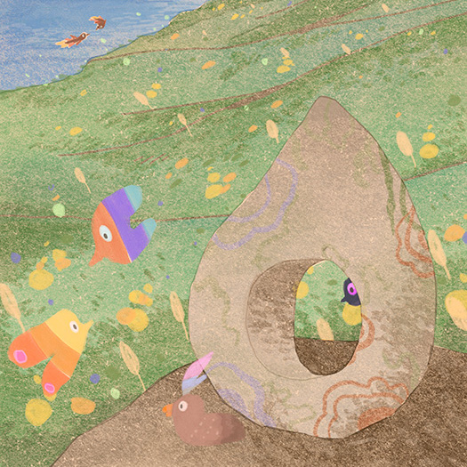

Shin Hanga Art
a look into the history and impact of woodblock printing

my own interpretation of Shin Hanga done digitally
Woodblock printing, originating thousands of years ago across China and later on Japan and Korea, is the first of many iterations of printmaking, leading to an important art movement in Japan, Shin Hanga.
With a focus on meaningful themes, soft colors, and beautiful landscapes, Shin Hanga prints became extremely popular, bringing the medium back into the spotlight. Through its origin, use of traditional themes and materials, and legacy, Shin Hanga greatly impacted how modern arts movements were developed.
A Brief History of Woodblock Printing
Woodblock printing had been a popular way of creating art in Japan since the early 1600s, with works such as Hokusai’s The Great Wave of Kanagawa being the most well known. As Japan’s woodblock printing culture continued to grow over the years, sub movements began to emerge as old ones lost their momentum, Shin Hanga being one of them. Shin Hanga prints derived from Ukiyo-e art, emerging right after “the industrialisation and westernisation of Japan put a halt to the importance of ukiyo-e prints” (Scrolavezza). Shin Hanga, meaning ‘new prints’ was built upon the ideologies that made ukiyo-e popular, but was aimed toward a more contemporary society, simultaneously appealing to western audiences through modern takes on themes and techniques. While most ukiyo-e artists such as Tsukioka Yoshitoshi portrayed subjects such as courtesans, culturally significant landscapes, and daily life, Shin Hanga artists like Kawase Hasui focused more on daily life and landscape of all kinds, with an emphasis on atmospheric effect, lighting and perspective, and softer colors. Their style was also inspired from impressionistic techniques, in which lights and shadows were captured in the moment, leaving carving strokes often visible.
The Shin Hanga art movement was spearheaded by Watanabe Shozaburo, a publisher who created a company to help produce and sell the work of local artists. He worked with a team of designers and craftsmen, hiring “the artist to create a commissioned design” while “block-cutters and printers made the prints themselves, and finally Watanabe sold the prints…(Watanabe). His main goal was to market the prints to the western audience and increase global exports, which ultimately led Shin Hanga prints to be enjoyed worldwide. As the movement originated from the widely popular Ukiyo-e art, it had already been an appreciated art form, however since Ukiyo-e art had begun to dwindle, Shin Hanga was able to keep the art alive and provide a fresh take on it, allowing this beloved art form to thrive and be a part of history. These prints “continue to be seen as a bridge between the Edo printing traditions and 20th-century art” (Scrolavezza), creating a transition from more historical fine art pieces into art of our everyday lives.
Hiroshi Yoshida
Whether it be Japanese artists such as Hawase Kasui or English printmakers like Charles W. Bartlett, their beautifully crafted designs were highly sought after. One notable printmaker of the time was Hiroshi Yoshida, one of the most well known Shin Hanga artists globally. Yoshida was a skilled painter before working on woodblock prints, and in 1920 worked for Shozaburo for a few years until he later on created his own studio. A lot of his work focused on foreign landscapes and subjects he would observe on his travels (The Lavenberg), and many of his popular prints experimented with materials and lighting. His series of the Taj Mahal, and many of his other works, is colored to portray different times of day, capturing the atmosphere of the early morning or dull nights. His work appealed to a global audience and made a name for himself among international art collectors, as he combined the “perspectives and compositions of Western-style paintings with the highly refined and precise techniques of ukiyo-e woodcuts” (The Lavenberg). A major distinction that he maintained for his own work was that he was consistently involved in the process of the printmaking. Shozaburo’s publishing company had different teams for different processes, which meant the design was out of the artists’ hand once they gave it to the carvers. Hiroshi’s prints bore the “jizuri stamp (two characters reading ‘self-printed’)” (Hiroshi), which indicated his creative direction present throughout the process. His ability to be involved from start to finish made his prints personable and highly detailed, and his prints were accessible to a lot more people than most Japan-based printmakers. His popularity increased among global audiences, allowing this traditional medium to carry over into different cultures of art, as Ukiyo-e once did. The efforts of the artists allowed woodblock printing to thrive, leaving behind not only a legacy in the Japanese arts world, but in the global art community as well, where artists further developed the craft.
Techniques
The Shin Hanga woodblock printing technique allowed for mass production and sharing similar to Ukiyo-e, an important aspect that paved the way for modern art culture. In woodblock printing, an artist’s design is redrawn on a thin sheet of paper, which is then transferred by an oil solution onto a block of cherry wood (woodblock printing). The art is then carved into the woodblock in such a way to decide where ink goes and where it doesn't. The area that is carved away remains free from ink, indented into the wood, and the uncarved area is where ink is directly brushed onto. Some prints only require one woodblock, which can still lend to multicolor compositions while being inexpensive. Artists block off certain areas of the wood when applying colors to keep them separate, which may mean multiple passes of color to finish the print. Other Shin Hanga prints may use multiple woodblocks in the process, in which a different part of the design is carved into to highlight or add more details. These woodblocks are then stamped onto paper, allowing consistency and efficiency among many prints. Shin Hanga prints usually have soft and subtle gradients in their compositions, created either by layering or wiping away ink on the block itself. These techniques allowed for beautiful landscape prints, which highlighted the atmosphere of daytime and nighttime through subtle highlights and shadows. Many original prints “use water or vegetable-based inks or pigments held in rice paste, making them very sensitive to moisture disturbances and extremely high risk of fading from light exposure” (fine art-restoration). These techniques are similar to Ukiyo-e prints, the biggest difference between the two however, was the principles of design and composition, realism in terms of visual hierarchy, figure ground relationship, and linear perspective. Hanga prints utilized one and two point perspective, architecture and as subjects grew farther away from the foreground, colors shifted in values. This shift from flat and stylized art to realism kept the technique of woodprinting in the eye of the public, and it had already created its legacy as a way to make art easily accessible.
Woodblock Printing and the Modern World
Today, woodblock printed art has come full circle, once again becoming fine art pieces, perfected by artisans and taught in workshops around the world. While the Shin Hanga movement specifically is no longer mainstream, its influence as part of woodblock printing is still seen everywhere. As movements like Ukiyo-e and Shin Hanga kept the medium alive in the mainstream art world, various art movements were able to thrive. Woodcut or wordless novels, an art movement in Germany around the 1920s utilized woodcut printing to make narrative prints combined into books, with notable emerging artists such as Frans Masareel who pioneered the movement. These print books carried “a political or social message and [dealt] with the hardships faced by the oppressed, the working class, and the poor” (Wordless). Ideas were able to be reproduced and easily shared through the convenience of woodblock art. Woodblock printing was also utilized in the arts and crafts movement as an exploration of the medium and craftsmanship. Artists “blended traditional techniques from Europe and Japan with their own inventive strategies to forge individual styles” (American Arts), building upon the foundation of Shin Hanga, like how it did for Ukiyo-e. Another major outcome from woodblock prints is the current manga culture in Japan.
Some of the early iterations of manga, and even seen in some works today, share similar styles and were inspired by ukiyo-e prints. Flat illustrations and the ability to quickly make prints were ideal in selling narrative stories to large audiences. In the 1940s, “Aka-hon, or ‘red books,’ were illustrated booklets made using woodblock techniques…and depicted children’s stories, fairytales, and folklore” (Wacom). These Aka-hons had red covers, and inspired the development of manga to become what it is today, easy to create and easy to share. An important aspect of art is the ability to develop it into new styles as cultures of art continue to fluctuate, and since Shin Hanga prints and woodblock art in general provided so much creative development with carving techniques, inks. Printing materials, and elements of design, each iteration of it left behind an even stronger legacy and impact on art today.